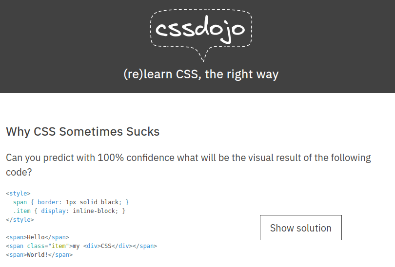

Pourquoi le CSS Ça Saoule Souvent ?
Objectifs
- Comprendre les principes fondamentaux du CSS et son rôle dans la conception de sites web.
- Explorer les défis courants rencontrés lors de l'utilisation du CSS et apprendre à les surmonter.
- Et surtout se familiariser avec des ressources externes de qualité, telles que des vidéos et des sites dédiés.
Pré-requis
- 1
Valider les quêtes suivantes
Quêtes liées - 2
Avoir une vision claire de ce qu'est le CSS
Le CSS est un langage utilisé pour styliser et formater le contenu HTML d'une page web, permettant de contrôler son aspect visuel et sa mise en page.
- 3
Être à l'aise avec la syntaxe du CSS

Introduction
Si tu as déjà passé du temps à travailler avec le CSS, tu as sûrement ressenti une certaine frustration à un moment donné. Ne t'inquiétes pas, tu n'es la pas seule personne à qui c'est arrivé.
L'objectif de cette quête est de t'offrir une introduction solide au CSS et de t'orienter vers des ressources externes de qualité pour approfondir tes connaissances.
Si tu débutes en CSS ou si tu préfères des ressources en français, je te recommande de consulter d'autres ressources pour le moment. Tu peux par exemple explorer la quête suivante :
Pourquoi le CSS Ca Saoule Souvent
Avant de plonger dans les détails du CSS, prenons un moment pour comprendre pourquoi cela peut parfois sembler complexe. Je t'invite à regarder cette vidéo captivante d'Albéric Trancard intitulée "Pourquoi le CSS Ca Saoule Souvent".
Dans cette vidéo d'environ 40 min, captée lors de la conférence Sunny Tech 2023, Albéric explore les défis courants rencontrés lors de l'utilisation du CSS et propose des solutions pratiques.
Après avoir visionné la vidéo, je t'encourage à explorer le site dédié à la maîtrise du CSS créé par Albéric Trancard : CSS Dojo. Ce site offre une approche pratique avec des exercices (katas) pour renforcer la compréhension du CSS.

Certains chapitres de CSS Dojo peuvent ne pas être encore disponibles. C'est pourquoi nous avons également préparé nos propres ressources pour toi :